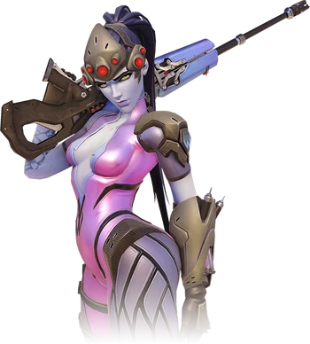

Киборг Гэндзи Шимада смирился со своим механическим телом, которое раньше вызывало у него лишь отвращение, тем самым открыв новую лучшую сторону своего характера. Как младший сын главы клана ниндзя Шимада, Гэндзи жил в роскоши и привык к привилегированному положению. Он не проявлял интереса к криминальным аспектам деятельности клана. Хотя ему нравилось обучаться мастерству ниндзя — в чем он весьма преуспел, Гэндзи предпочитал прожигать жизнь, строя из себя молодого плейбоя. Многие члены клана считали, что его беззаботный образ жизни не сулит ничего хорошего и может обернуться бедой, и потому их возмущало чрезмерное внимание и опека, которые отец Гэндзи проявлял по отношению к сыну. После внезапной гибели главы клана старший брат Гэндзи, Хандзо, потребовал, чтобы тот принял большее участие в судьбе криминальной империи их отца. Гэндзи отказался, чем навлек на себя гнев Хандзо. Страсти достигли такого накала, что братья бросились друг на друга с оружием. Этот поединок чуть не стоил жизни Гэндзи. Хандзо думал, что убил своего брата, но благодаря действиям Overwatch и вмешательству доктора Ангелы Циглер Гэндзи удалось спасти. Всемирная служба безопасности увидела в Гэндзи потенциального союзника в борьбе с кланом Шимада. Он умирал от полученных ран, но организация Overwatch предложила ему спасение в обмен на службу. Многие органы Гэндзи пришлось заменить на кибернетические импланты. Это сделало Гэндзи еще быстрее и улучшило его навыки ниндзя. Превращенный в живое оружие, Гэндзи бросил все свои силы на уничтожение криминальной империи, которая принадлежала его семье.
Роковая вдова — идеальная убийца: терпеливая, безжалостная и эффективная, она не выказывает ни эмоций, ни сожалений. Считается, что в прошлой жизни Роковая вдова была супругой Жерара Лакруа, агента организации Overwatch, планировавшего операции, направленные на подавление деятельности террористической организации «Коготь». После нескольких неудавшихся попыток убрать Жерара «Коготь» решил сменить тактику и сосредоточился на его жене, Амели. Агенты «Когтя» похитили ее и подвергли интенсивному курсу нейронной модификации. Процедуры сломили ее волю и подавили личность; женщина превратилась в «спящего» агента. Спустя некоторое время сотрудники Overwatch вызволили Амели, казалось бы, в целости и сохранности, и она вернулась к нормальной жизни. Через две недели она убила Жерара, пока он спал. Поскольку миссия Амели была выполнена, она вернулась в «Коготь», где завершился процесс ее превращения в живое оружие. Она получила всестороннюю подготовку в искусстве маскировки, а ее физиология была изменена. Сердечный ритм замедлился настолько, что кожа бывшей мадам Лакруа стала холодной и бледной, а способность испытывать эмоции практически пропала. Амели, которую все помнили, умерла. На данный момент Роковая вдова является самой эффективной убийцей «Когтя», и лишь успешно выполненная работа приносит ей удовлетворение.
